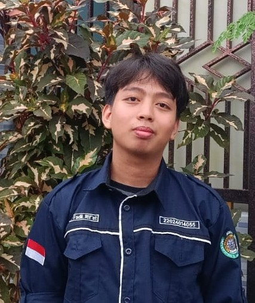

Selamat Datang di Halaman Website Saya
Mengenal Lebih Dekat Tentang Diri Saya
Nama saya adalah Imam Fadil Rif'at. Saya seorang Mahasiswa Informatika di Universitas Islam Makassar yang memiliki minat dalam web development.
Jika Anda ingin mengenal saya lebih dalam, silakan klik di sini.